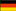

| Torneo | Sede | Campeón | Subcampeón |
| 2018 | Rusia |  Francia(2) Francia(2) |
 Croacia Croacia |
| 2014 | Brasil |  Alemania(4) |  Argentina Argentina |
| 2010 | Sudáfrica |  España(1) España(1) |
 Paises Bajos Paises Bajos |
| 2006 | Alemania |  Italia(4) Italia(4) |
Francia |
| 2002 | Corea/Japón |  Brasil(5) Brasil(5) |
Alemania |
| 1998 | Francia | Francia(1) |
Brasil |
| 1994 | USA | Brasil(4) |
Italia |
| 1990 | Italia | Alemania(3) | Argentina |
| 1986 | México | Argentina(2) |
Alemania |
| 1982 | España | Italia(3) |
Alemania |
| 1978 | Argentina | Argentina(1) |
Paises Bajos |
| 1974 | Alemania | Alemania(2) | Paises Bajos |
| 1970 | México | Brasil(3) |
Italia |
| 1966 | Inglaterra |  Inglaterra(1) Inglaterra(1) |
Alemania |
| 1962 | Chile | Brasil(2) |
Checoslovaquia |
| 1958 | Suecia | Brasil(1) |
Suecia |
| 1954 | Suiza | Alemania(1) |  Hungria Hungria |
| 1950 | Brasil |  Uruguay(2) Uruguay(2) |
Brasil |
| 1938 | Francia | Italia(2) |
Hungria |
| 1934 | Italia | Italia(1) |
Checoslovaquia |
| 1930 | Uruguay | Uruguay(1) |
Argentina |